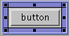
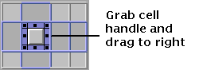
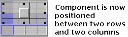

Resizing a Component
Once you place a component in a single cell in the gridbag, you can
consolidate adjoining cells to create one large cell in a row or
column. By creating one large cell, you have the flexibility of
positioning the component centrally or to the far left or right side
of that cell. You can also expand the component to fill the enlarged cell.
This section shows you how to:
To set the resize behavior of individual components with respect to
a change in window size, see Resizing
the Layout.
 To select a component in a
cell:
To select a component in a
cell:
- Click in the area between the component and the cell border.
Sizing handles appear on the sides and corners of the selected component.

To combine several cells:
- Select the component.
- Click on one of the eight handles that surround the component.
- Drag the handle, stretching the component across rows and columns
in the grid.



In the figure on the right, the component can be anchored in the
center, east (right), or west (left) position. If the component's cell had been
extended across the next row, the component could be anchored in the
northwest, northeast, southwest, or southeast positions as well:

To fill a cell with a component:
- Select the component.

- Click on the black bar on the cell width control to extend the component
horizontally across the cell.

Arrowheads appear on the ends of the black bar, and the component's
size is automatically increased to fill the containing cell.
 See also:
See also:
- Resizing the Layout
- Generating Java Source Code
- Laying Out the the Interface
- Modifying Components in the Grid